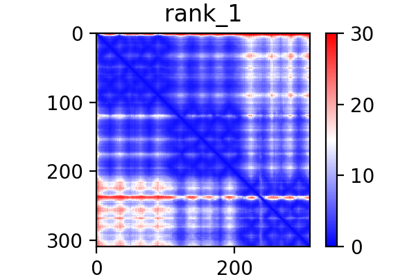
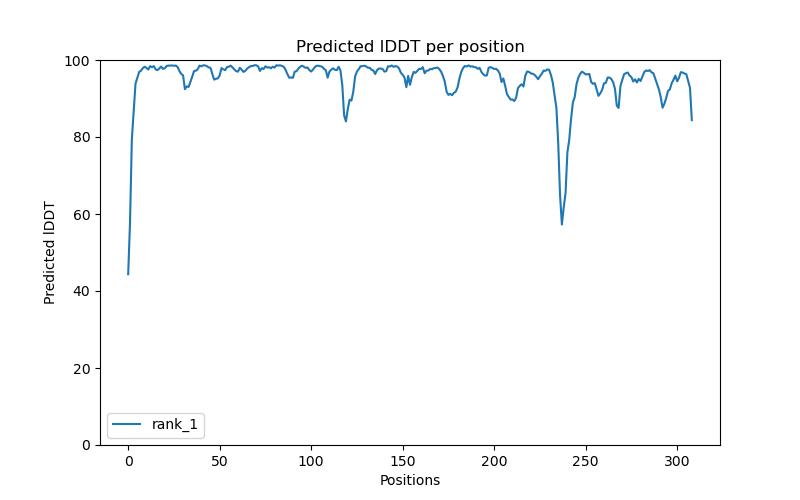
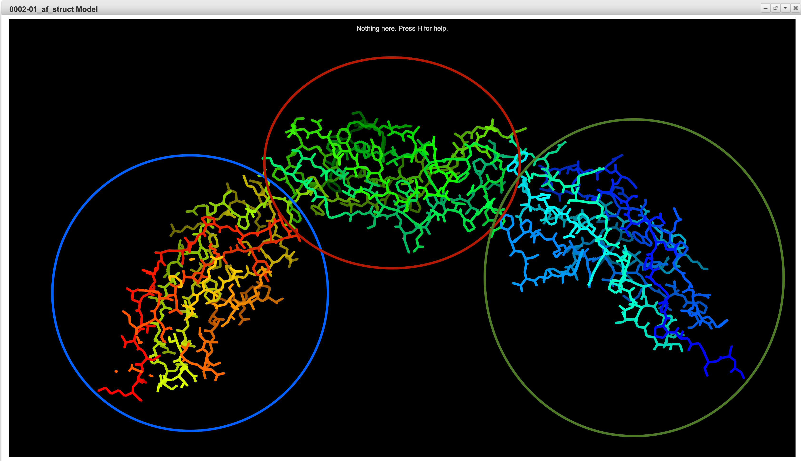
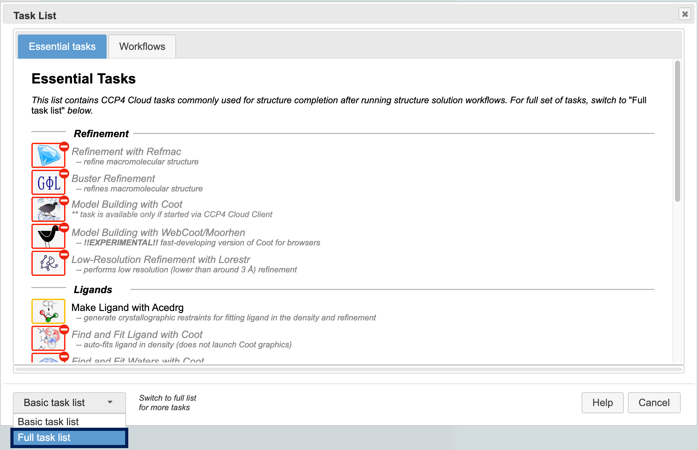
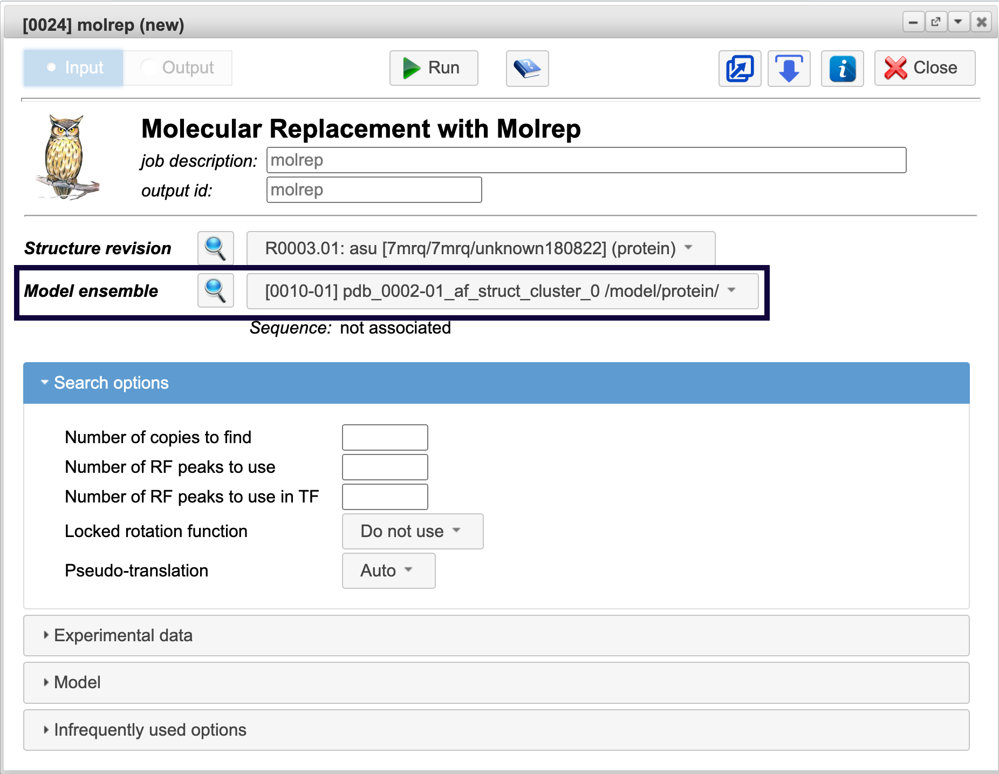
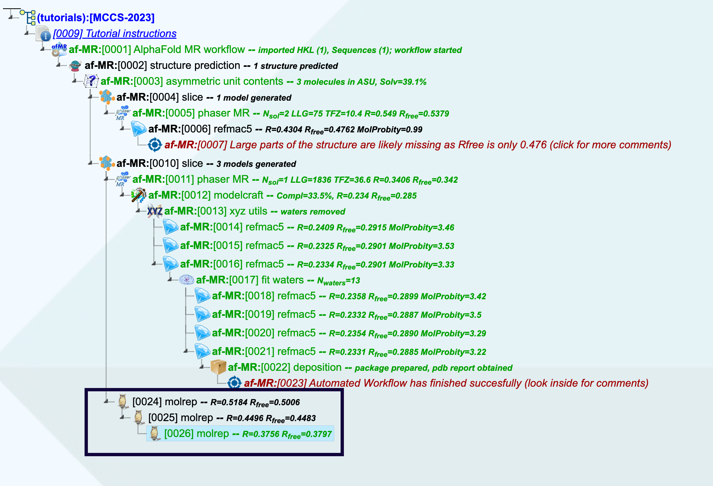
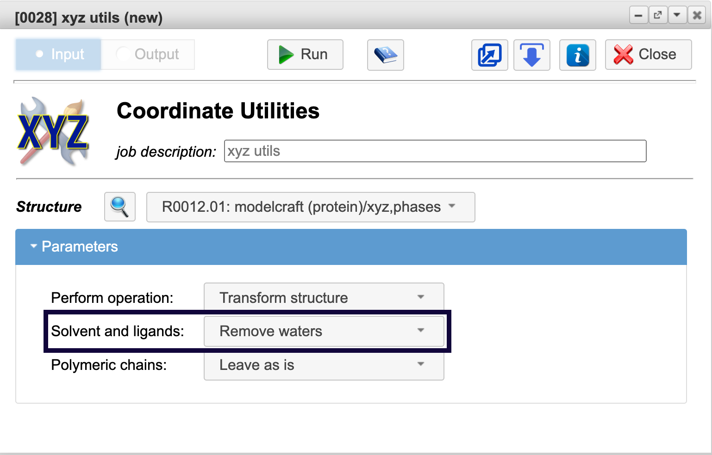

6. MR with predicted model¶
In this tutorial, we will show you how to use predicted models as a search model for Molecular Replacement (MR), and how to develop a project tree in case the automatic workflow run was not successful on Chicken CNTN4 FN1-FN3 domains with T751A, V752A, Y781A, E786A mutations (PDB ID 7MRQ) example.
AlphaFold2 and RoseTTAFold predicted models are widely acknowledged as good structure templates for Molecular Replacement (MR).
This tutorial comes with an already failed workflow branch, which will be used as a seed for further work.
Structure prediction task generated model using OpenFold implementation of AlphaFold with a decent level of confidence.
Let’s look at this closely.
Double-click on Structure Prediction task [0002]. In the task report you can find:
Predicted Aligned Error matrix:
“Predicted Aligned Error” (PAE) matrix colour at (x, y) indicates AlphaFold’s expected position error at residue x if the predicted and true structures were aligned on residue y. The lower the error, the more trustworthy the model.
Predicted local distance difference (pLDDT) scores plot:
pLDDT scores are estimate of confidence on a scale from 0 - 100. Although pLDDT is stored in the B-factor fields of the mmCIF and PDB files but unlike a B-factor, higher pLDDT is better. This misguides MR programs regarding the regions with low or high reliability, and, therefore, the scores must be recalculated as B-factors. The good news is that in CCP4 Cloud, this recalculation is done automatically
pLDDT
Regions with pLDDT > 90 are expected to be modelled to high accuracy. These should be suitable for any application that benefits from high accuracy (e.g. characterising binding sites). Regions with pLDDT between 70 and 90 are expected to be modelled well (a generally good backbone prediction).
Regions with pLDDT between 50 and 70 are low confidence and should be treated with caution.
The 3D coordinates of regions with pLDDT < 50 often have a ribbon-like appearance and should not be interpreted. pLDDT < 50 is a reasonably strong predictor of disorder, i.e. it suggests such a region is either unstructured in physiological conditions or only structured as part of a complex. (this relationship has typically been tested in the context of well-studied proteins, which may have more evolutionarily-related sequences available than a randomly chosen UniProt entry.) Structured domains with many inter-residue contacts are likely to be more reliable than extended linkers or isolated long helices. Unphysical bond lengths and clashes do not usually appear in confident regions. Any part of a structure with several of these should be disregarded.
Information regarding pLDDT and PAE was taken from https://alphafold.ebi.ac.uk/
For successful Molecular Replacement with the predicted model as the next step we need to identify domains or rigid units:
Let’s have a look at the model with UglyMol.
{kind=link}
Here we can distinguish 3 domains in the model.
{kind=link}
Splitting models into domains can make the placement of models through MR easier. So next logical step will be to slice the model into 3 domains with Slice task.
Since Slice task was created in workflow, we can copy existing Slice task and change Number of splits to 3 and pLDDT threshold to 85 as shown below.
{kind=link}
Run the task with Keep auto mode activated as shown above. By doing so you can continue workflow (WF) from the Slice task. That will result in branching out the working tree on the failed WF branch and the new WF branch with the model sliced on 3 domains. Domains will be separately phased by Phaser.
Alongside WF we can branch the working tree even more and try solving our structure with Molrep.
Note
We will have to phase each domain separately.
To add Molrep task click on Slice task, then press add new task => and then in the bottom left corner Switch to full list for more tasks as shown below
{kind=link}
In full task list go to all tasks => Molecular Replacement => Molrep
It’s better to phase the bigger domain first. But in our case all 3 domains are approximately the same size, so we will start by choosing [0010-01] pdb_0002-01_af_struct_cluster_0 /model/protein/ in Model ensemble section of Molrep input table as shown below
{kind=link}
Run Molrep task
After the Molrep task is finished run the new Molrep task by selecting the finished Molrep task and adding a new task to it. For the second Molrep task choose [0010-02] pdb_0002-01_af_struct_cluster_1 /model/protein/ in the Model ensemble section.
Run third Molrep task with [0010-02] pdb_0002-01_af_struct_cluster_2 /model/protein/ in the Model ensemble section.
You should have a branch with 3 Molrep jobs as a result as shown below
{kind=link}
Predicted models usually have very high sequence similarity with the target structure. Nevertheless, structure rebuilding with Modelcraft, CCP4 Build, Buccaneer or Arp/wArp is usually required after phasing because low confidence parts of the model were removed at model preparation stage (equivalent to high B-factors).
Next step is start Modelcraft: add new job => All tasks => Refinement and Model Building => Automatic Model Building with ModelCraft.
Note
You can watch in real-time how Modelcraft builds model by clicking on Build in progress button
Once Modelcraft is finished you may want to remove water at first. To remove water go to All Tasks => Toolbox => Coordinate Utilities
Select Remove waters in Solvent and ligands section as shown below
{kind=link}
Run the tasks
Now is time for refinement!
Here are links for Refinement tutorials made by Dr. R. Nicholls which may help you to continue with refinement:
Refinement using REFMAC5 - Part 1: Simple Refinement
Refinement using REFMAC5 - Part 2: Twin Refinement
Refinement using REFMAC5 - Part 3: Ligand Dictionary Generation, Fitting & Refinement